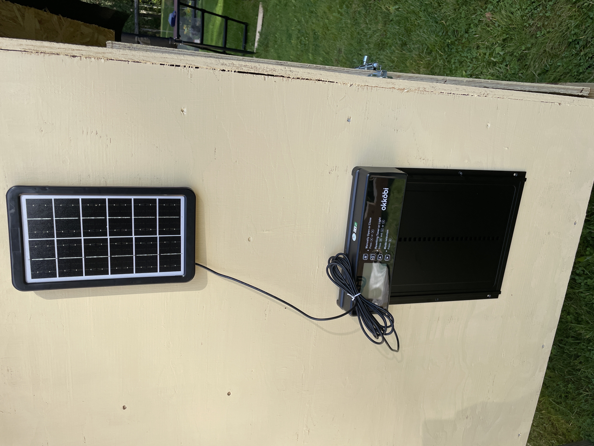

Hej, jag är Gabriel.
Jag bor i Örebro med min familj — fru och tre barn. Jag forskar om entreprenörskap och innovation på universitetet, och ett av mina forskningsprojekt handlar om småskaligt lantbruk. Det är mitt riktiga jobb. Den här sajten är inte mitt jobb — den är en sidoanteckningsbok.



Varför finns Hönsguiden?
Vi lånade fem kycklingar av en granne sommaren 2025. Det var meningen att vi bara skulle ha dem några veckor. Vi hade dem i fem månader. Barnen ville ha egna efter två veckor. Vi sa nej en lång tid. Till slut sa vi ja.
Sen byggde jag ett hönshus själv på baksidan av tomten samma sommar — en flyttbar tractor-modell. Jag läste allt jag kunde hitta på svenska om hönsskötsel innan jag ens började. Mycket var säljande, mycket var tunt. Jag hittade inte en sajt som lät som någon som faktiskt hade höns och öppet ändrade sig om saker. Så jag började skriva ner mina egna anteckningar. Det blev den här sajten.
Vad sajten är
Det är mina anteckningar. Jag skriver om sånt jag har testat själv, och jag är tydlig med vad jag inte har testat. Jag rangordnar produkter men jag ändrar mig öppet — Okköbi-luckan är ett exempel: jag researchade länge, jämförde mot dyrare alternativ, och landade på den. Den har gått utan problem sedan sommaren 2025, och var inte ens dyr. Den ligger på #1 av en anledning.
Jag tjänar lite pengar på affiliate-länkar. Inte mycket. Det räcker till hosting och en påse foder då och då. Det förändrar inte min rangordning. Om det skulle göra det någon gång kommer jag skriva det rakt ut.
Vad sajten inte är
- Den är inte komplett. Det finns gott om hönsutrustning jag aldrig testat.
- Den är inte uppdaterad varje vecka. Jag skriver när jag har något att säga.
- Den är inte ett företag. Det är jag och en pärm med anteckningar.
Hur jag testar
Det jag har provat själv står det "min" eller "✓" på. Det jag bara läst om står det "○" på. Mycket är ○. Jag kommer aldrig låtsas att jag testat något jag inte har testat — det är liksom hela poängen.
Skriv till mig
Om du har höns och tycker jag har fel om något: hej@honsguiden.se. Jag läser allt. Jag svarar på det mesta inom en vecka. Om du rättar mig om något konkret skriver jag in det på sidan och tackar dig vid namn (eller anonymt om du föredrar det).
- Namn Gabriel Linton
- Bor i Örebro
- Familj Fru, tre barn
- Jobb Forskare — entreprenörskap & innovation
- Höns just nu 0 (april 2026)
- Hönshus Byggde sommaren 2025
- Lucköppnare Okköbi Solar, sedan 2025